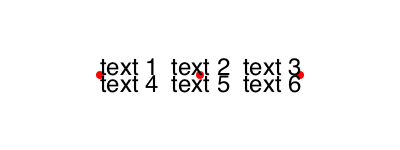

Text and fonts
Placing text
Use text() to place text.
pt1 = Point(-100, 0)
pt2 = Point(0, 0)
pt3 = Point(100, 0)
sethue("red")
map(p -> circle(p, 4, :fill), [pt1, pt2, pt3])
sethue("black")
text("text 1", pt1, halign=:left, valign = :bottom)
text("text 2", pt2, halign=:center, valign = :bottom)
text("text 3", pt3, halign=:right, valign = :bottom)
text("text 4", pt1, halign=:left, valign = :top)
text("text 5 ", pt2, halign=:center, valign = :top)
text("text 6", pt3, halign=:right, valign = :top)
Luxor.text — Function.text(str)
text(str, pos)
text(str, x, y)
text(str, pos, halign=:left)
text(str, valign=:baseline)
text(str, valign=:baseline, halign=:left)
text(str, pos, valign=:baseline, halign=:left)Draw the text in the string str at x/y or pt, placing the start of the string at the point. If you omit the point, it's placed at the current 0/0. In Luxor, placing text doesn't affect the current point.
:halign can be :left, :center, or :right. :valign can be :baseline, :top, :middle, or :bottom.
However, the :valign doesn't work properly because we're using Cairo's so-called "toy" interface... :(
textpath() converts the text into a graphic path suitable for further styling.
Luxor.textpath — Function.textpath(t)Convert the text in string t to a new path, for subsequent filling/stroking etc...
Luxor uses what's called the "toy" text interface in Cairo.
Fonts
Use fontface(fontname) to choose a font, and fontsize(n) to set the font size in points.
The textextents(str) function gets an array of dimensions of the string str, given the current font.

The green dot is the text placement point and reference point for the font, the yellow circle shows the text block's x and y bearings, and the blue dot shows the advance point where the next character should be placed.
Luxor.fontface — Function.fontface(fontname)Select a font to use. If the font is unavailable, it defaults to Helvetica/San Francisco (on macOS).
Luxor.fontsize — Function.fontsize(n)Set the font size to n points. Default is 10pt.
Luxor.textextents — Function.textextents(str)Return the measurements of the string str when set using the current font settings:
1 x_bearing 2 y_bearing 3 width 4 height 5 x_advance 6 y_advance
The bearing is the displacement from the reference point to the upper-left corner of the bounding box. It is often zero or a small positive value for x displacement, but can be negative x for characters like j; it's almost always a negative value for y displacement.
The width and height then describe the size of the bounding box. The advance takes you to the suggested reference point for the next letter. Note that bounding boxes for subsequent blocks of text can overlap if the bearing is negative, or the advance is smaller than the width would suggest.
Example:
textextents("R")returns
[1.18652; -9.68335; 8.04199; 9.68335; 9.74927; 0.0]Text on a curve
Use textcurve(str) to draw a string str on a circular arc or spiral.

using Luxor
Drawing(1800, 1800, "/tmp/text-spiral.png")
origin()
background("ivory")
fontsize(18)
fontface("LucidaSansUnicode")
sethue("royalblue4")
textstring = join(names(Base), " ")
textcurve("this spiral contains every word in julia names(Base): " * textstring, -pi/2,
800, 0, 0,
spiral_in_out_shift = -18.0,
letter_spacing = 0,
spiral_ring_step = 0)
fontsize(35)
fontface("Agenda-Black")
textcentred("julia names(Base)", 0, 0)
finish()
preview()For shorter strings, textcurvecentered() tries to place the text on a circular arc by its center point.
fontface("GothamBlack")
circle(O, 100, :stroke)
textcurvecentered("hello world", -pi/2, 100, O;
clockwise = true,
letter_spacing = 0,
baselineshift = -20
)
textcurvecentered("hello world", pi/2, 100, O;
clockwise = false,
letter_spacing = 0,
baselineshift = 10
)
Luxor.textcurve — Function.Place a string of text on a curve. It can spiral in or out.
textcurve(the_text, start_angle, start_radius, x_pos = 0, y_pos = 0;
# optional keyword arguments:
spiral_ring_step = 0, # step out or in by this amount
letter_spacing = 0, # tracking/space between chars, tighter is (-), looser is (+)
spiral_in_out_shift = 0, # + values go outwards, - values spiral inwards
clockwise = true
)start_angle is relative to +ve x-axis, arc/circle is centred on (x_pos,y_pos) with radius start_radius.
Luxor.textcurvecentered — Function.textcurvecentered(the_text, start_angle, start_radius, center::Point;
clockwise = true,
letter_spacing = 0,
baselineshift = 0This version of the textcurve() function is designed for shorter text strings that need positioning around a circle. (A cheesy effect much beloved of hipster brands and retronauts.)
letter_spacing adjusts the tracking/space between chars, tighter is (-), looser is (+)). baselineshift moves the text up or down away from the baseline.
The letter spacing is not taken into account when first positioning the text.
Text clipping
You can use newly-created text paths as a clipping region - here the text paths are filled with names of randomly chosen Julia functions:

using Luxor
currentwidth = 1250 # pts
currentheight = 800 # pts
Drawing(currentwidth, currentheight, "/tmp/text-path-clipping.png")
origin()
background("darkslategray3")
fontsize(600) # big fontsize to use for clipping
fontface("Agenda-Black")
str = "julia" # string to be clipped
w, h = textextents(str)[3:4] # get width and height
translate(-(currentwidth/2) + 50, -(currentheight/2) + h)
textpath(str) # make text into a path
setline(3)
setcolor("black")
fillpreserve() # fill but keep
clip() # and use for clipping region
fontface("Monaco")
fontsize(10)
namelist = map(x->string(x), names(Base)) # get list of function names in Base.
x = -20
y = -h
while y < currentheight
sethue(rand(7:10)/10, rand(7:10)/10, rand(7:10)/10)
s = namelist[rand(1:end)]
text(s, x, y)
se = textextents(s)
x += se[5] # move to the right
if x > w
x = -20 # next row
y += 10
end
end
finish()
preview()